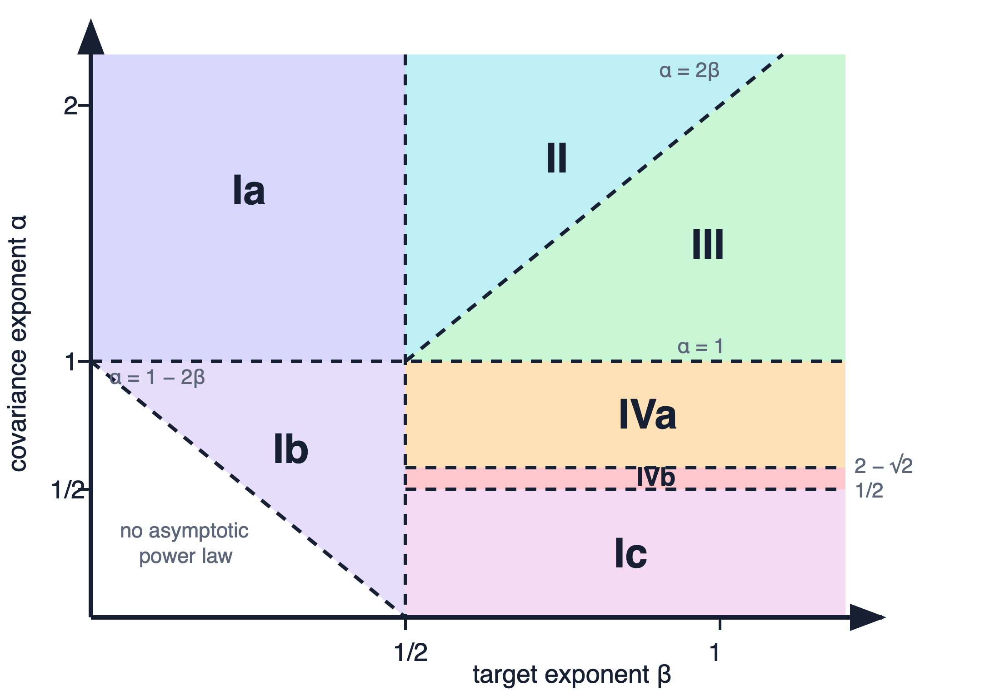
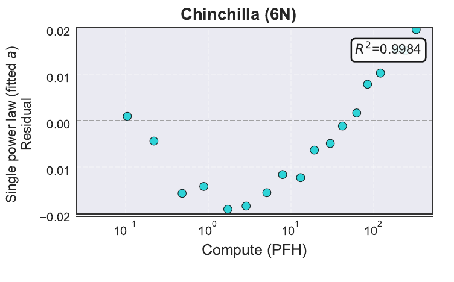
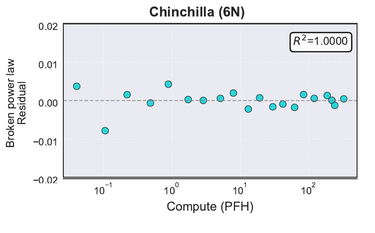

Momentum Schedules
When memory changes a scaling law
Outscaling changes a slope, not only a prefactor
Suppose two optimizers have compute-optimal losses
\[ \mathcal L_{\star,A}(\mathsf C) \asymp c_A\mathsf C^{-\eta_A}, \qquad \mathcal L_{\star,B}(\mathsf C) \asymp c_B\mathsf C^{-\eta_B}. \]
Multiplicative gain
\(c_A<c_B\) lowers the curve while preserving its slope.
Algorithmic outscaling
\(\eta_A>\eta_B\) makes the advantage grow with compute.
A finite compute range can confuse a crossover with a new exponent, so we need both a solvable model and careful residual checks.
Fixed momentum has a fixed memory horizon
For the exponential moving average
\[ \begin{aligned} m_{t+1} &=\beta m_t+(1-\beta)g_{t+1}\\ &=(1-\beta)\sum_{s=0}^{t}\beta^{t-s}g_{s+1}, \qquad \tau_{\rm mem}\asymp(1-\beta)^{-1}. \end{aligned} \]
\(\beta=0.9\)
Remembers roughly \(10\) steps.
\(\beta=0.99\)
Remembers roughly \(100\) steps.
Constant momentum can improve transients and constants, but its memory scale does not grow with the training problem.
Nesterov makes the memory horizon grow with time
One deterministic Nesterov schedule uses
\[ \mu_t=\frac{t}{t+3}=1-\frac{3}{t+3}, \qquad (1-\mu_t)^{-1}\asymp t. \]
Its small-step limit has the schematic form
\[ \ddot\theta(t)+\frac{c}{t}\dot\theta(t)+\nabla L(\theta(t))=0. \]
The horizon grows with the optimizer’s age, while the \(1/t\) friction supplies the deterministic acceleration mechanism (Su et al. 2016).
Extra-gradient coordinates separate signal and memory
With look-ahead \(\Phi_t\) and \(m_t=-v_t/\gamma\), Nesterov becomes
\[ \begin{aligned} g_{t+1}&=\nabla L(\Phi_t),\\ m_{t+1}&=\mu_{t-1}m_t+g_{t+1},\\ \Phi_{t+1} &=\Phi_t-\gamma\bigl(g_{t+1}+\mu_t m_{t+1}\bigr). \end{aligned} \]
Fresh channel
\(g_{t+1}\) injects the newest directional information.
Memory channel
\(m_{t+1}\) accumulates an increasingly long gradient history.
These coordinates isolate the memory coefficient that DANA damps.
Naive stochastic Nesterov remembers gradient noise too

Replacing the full gradient by a batch-one gradient preserves the recursion, but not deterministic Nesterov’s stability or acceleration guarantee.
\(d=1000\); source \(\alpha_{\rm paper}=1.4\), hence course \(\alpha=2.8\).
DANA keeps long memory but damps its contribution
Start from the same accumulator but separate the update coefficient:
\[ \begin{aligned} m_{t+1}&=\mu_{t-1}m_t+g_{t+1},\\ \Phi_{t+1} &=\Phi_t-\gamma\bigl(g_{t+1}+a_t m_{t+1}\bigr), \qquad a_t<\mu_t. \end{aligned} \]
| method | accumulator memory | update contribution |
|---|---|---|
| Standard Nesterov | \(\mu_{t-1}\uparrow1\) | \(a_t=\mu_t\): undamped history |
| DANA-constant / AcSGD | \(\mu_{t-1}\uparrow1\) | \(a_t<\mu_t\): fixed scale from \(d\) or a horizon |
| DANA-decaying | \(\mu_{t-1}\uparrow1\) | \(a_t<\mu_t\): scale adapts with \(t\) |
AcSGD is essentially DANA-constant in these coordinates: growing memory with summable noisy feedback (Varré and Flammarion 2022).
DANA steepens PLRF loss where fixed momentum does not

The methods share the early regime; the DANA branches steepen later, with the DANA-constant transition around \(t\asymp d\).
Theory
Acceleration is a change of clock
The controlled comparison changes only the optimizer
In the course convention,
\[ X_j=j^{-\alpha/2}Z_j, \qquad \operatorname{Var}(X_j)=j^{-\alpha}, \qquad b_j=j^{-\beta}. \]
A Gaussian feature map \(W\in\mathbb R^{v\times d}\) gives
\[ \mathcal L(\theta) =\left\|\Sigma^{1/2}(W\theta-b)\right\|_2^2, \qquad \widehat K=W^\top\Sigma W. \]
Covariance, target, feature map, batches, and compute model are fixed. Only the optimizer changes.
The same four loss components remain active

| phase | active components |
|---|---|
| I | \(P+F\) |
| II | \(P+E+F\) |
| III | \(V+E+F\) |
| IV | \(P+V+F\) |
\(P,E,F,V\) denote population bias, embedding bias, capacity floor, and stochastic variance.
Course: \(\alpha=2\alpha_{\rm paper}\); trace-class boundary: \(\alpha=1\).
Momentum schedules produce a two-time Volterra kernel
Each eigenvalue \(\lambda\) of \(\widehat K\) has a time-dependent matrix propagator:
\[ \frac{\partial}{\partial t}\Phi_\lambda(t,s) =\Omega(t;\lambda)\Phi_\lambda(t,s), \qquad \Phi_\lambda(s,s)=I. \]
Integrating over the deterministic spectral measures gives
\[ \boxed{ \mathscr P(t) =\mathscr F(t) +\int_0^t\mathscr K(t,s)\mathscr P(s)\,ds. } \]
\(\mathscr F\) is target forcing; \(\mathscr K(t,s)\) carries noise from \(s\) to \(t\).
The two-time kernel is non-convolutional.
Stability makes repeated noise feedback summable
Generalized Kesten bound. If \(K(t,s)\geq0\) and, for every \(0\leq r\leq t\),
\[ \int_r^t K(t,s)K(s,r)\,ds\leq C_KK(t,r), \]
then \(K^{*(n+1)}(t,r)\leq C_K^nK(t,r)\).
\[ C_K<1 \quad\Longrightarrow\quad \mathscr F+K*\mathscr F+K*K*\mathscr F+\cdots \asymp \mathscr F+K*\mathscr F. \]
Later feedback terms cannot create a new leading power once the stable Volterra series is a geometric sum.
Acceleration is a change of clock
Acceleration clock theorem.
Ferbach, Everett, Gidel, E. Paquette, and C. Paquette.
Away from critical lines, at fixed batch size and for stable hyperparameters,
\[ \boxed{ \mathscr P_{\rm alg}(t;d) \asymp \widehat{\mathscr F}(\vartheta_{\rm alg}(t);d) +\gamma\widehat{\mathscr K}_{pp}(\vartheta_{\rm alg}(t)). } \]
For DANA,
\[ \vartheta_{\rm DANA}(t) =1+2\gamma_2Bt +\left(\int_0^t\sqrt{\gamma_3(s)B}\,ds\right)^2. \]
The loss components stay the same; the optimizer changes how quickly abstract optimization time passes.
Each optimizer runs the same loss curve on a different clock
| method | effective clock \(\vartheta_{\rm alg}(t)\) | consequence |
|---|---|---|
| SGD | \(1+\gamma Bt\) | linear time |
| SGD with fixed momentum | \(1+\gamma_{\rm eff}Bt\) | new constant, same powers |
| DANA-constant | \(1+\gamma_2Bt+Bt^2/d\) | quadratic branch after \(t\asymp d\) |
| DANA-decaying | \(1+Bt+Bt^{\,2-1/\alpha}\) | superlinear clock for \(\alpha>1\) |
The clock tells us which slopes can steepen; the phase balance tells us whether that steepening changes the compute-optimal exponent.
Only DANA creates a superlinear clock
| method | effective clock | scaling consequence |
|---|---|---|
| SGD and SGD-M | \(\vartheta(t)\asymp t\) | fixed momentum only rescales a linear clock |
| DANA-constant | \(\vartheta(t)\asymp t+t^2/d\) | acceleration activates after \(t\asymp d\) |
| DANA-decaying | \(\vartheta(t)\asymp t+t^{2-1/\alpha}\) | the clock is superlinear for \(\alpha>1\) |
A faster late-time clock is necessary for outscaling, but it must become active before the compute-optimal balance is reached.
The loss components steepen without changing their identity

DANA steepens population and embedding bias; the optimizer-independent capacity floor remains fixed.
DANA outscales SGD above the trace-class line

The source line \(\alpha_{\rm paper}=1/2\) is course \(\alpha=1\). DANA-decaying outscales above it; DANA-constant does too except in Phase IIIb.
The theorem leaves acceleration below \(\alpha=1\) unresolved
What is proved
- Fixed momentum has SGD’s compute exponent.
- For \(\alpha>1\), DANA-decaying outscales SGD.
- DANA-constant also outscales there except in Phase IIIb.
What remains open
For \(\alpha\leq1\), the analyzed schedules have SGD’s exponent.
Can another noise-controlled schedule accelerate a non-trace-class spectrum?
Is the boundary a limitation of long-memory acceleration, or of the current DANA schedules and proof method?
Practice
Transport the scheduling principle
ADANA places the DANA principle inside AdamW
\[ \begin{aligned} m_{t+1}&=\beta_{1,t}m_t+(1-\beta_{1,t})g_{t+1},\\ v_{t+1}&=\beta_{2,t}v_t+(1-\beta_{2,t})g_{t+1}^{\odot2},\\ \theta_{t+1} &=(1-\gamma_t\lambda_t)\theta_t -\gamma_t\frac{m_{t+1}}{\sqrt{v_{t+1}}+\varepsilon}. \end{aligned} \]
Growing memory
Make \(\beta_{1,t}\uparrow1\) so the first-moment horizon grows with training.
Separate damping
Control how strongly the long-memory channel moves the normalized parameters.
ADANA transports DANA’s temporal design while retaining AdamW’s coordinatewise second-moment normalization (Loshchilov and Hutter 2019).
Logarithmic-time schedules remember multiplicative eras
\[ 1-\beta_t\asymp\frac{\delta}{t+\delta}, \qquad \tau_{\rm mem}(t)\asymp t+\delta. \]
Doubling training age doubles the memory horizon and retained history.
In the unnormalized-accumulator convention, damp the long-memory channel by
\[ a(t)\asymp(1+t)^{1-\kappa}, \qquad 0<\kappa<1, \]
Smaller \(\kappa\) is more aggressive; larger \(\kappa\) is more conservative; \(\kappa=1\) approaches baseline-like scaling.
A scaling experiment must scale the infrastructure too
| control | Enoki scaling choice |
|---|---|
| model shape | width and depth grow proportionally; \(d_{\rm head}=64\) |
| normalization | pre-LN; QK-LayerNorm before RoPE |
| initialization | fan-in scaling plus depth-scaled residual outputs |
| data allocation | sequence \(2048\), batch \(32\); \(N=20D\) tokens |
| learning rate | peak rate scaled separately for each optimizer |
Scale architecture, data, initialization, normalization, and tuning together.
Compute efficiency measures equal-loss compute
Let optimizer \(B\) use compute \(C_B\). Interpolate the baseline curve to find the compute \(C_A\) needed to reach the same validation loss:
\[ \boxed{ \text{compute multiplier}=\frac{C_A}{C_B}, \qquad \text{relative saving}=\frac{C_A-C_B}{C_B}. } \]
\(C_A/C_B=1\)
No compute advantage.
\(C_A/C_B=1.4\)
The baseline needs \(40\%\) more compute at equal loss.
This comparison remains meaningful even when neither curve supports a credible single asymptotic power law.
ADANA saves substantial compute over the measured ladder

The reported ADANA gain reaches roughly \(30\%\)–\(40\%\), a substantial finite-range observation rather than proof of a new asymptotic exponent.
The advantage grows and then stops near a common break
A two-power surrogate captures the bend:
\[ L(C)=a+bC^{-c}+eC^{-f}. \]
Before the break
Advantages grow across part of the ladder: finite-range outscaling.
After the break
All four optimizers bend in roughly the same region and have similar large-compute exponents.
The shared break signals a new dominant loss component or regime; it does not erase the measured savings.
Related crossover model: Caballero et al. (2023).
Residual structure reveals when the scaling law is wrong
Single power law

Broken power law

The single-power fit leaves a coherent arch despite high \(R^2\); the broken law removes nearly all structured scale dependence.
A 50% learning-rate miss is about a 3% compute error here
\[ \Delta L\approx\bar\zeta(\log q)^2, \qquad \bar\zeta=1.93\times10^{-2}, \qquad \Delta\log C\approx\frac{\Delta L}{s(L-a)}. \]
At the \(2.4\)B-parameter point, \(s(L-a)\approx0.099\) nats per unit log-compute.
| learning-rate factor \(q\) | loss penalty | implied compute penalty |
|---|---|---|
| \(1.5\) | \(0.00317\) nats | \(\approx3.2\%\) |
| \(2\) | \(0.00927\) nats | \(\approx9.8\%\) |
Baselining matters, but this local curvature cannot explain a reported \(30\%\)–\(40\%\) compute gain.
Weight decay should use the same logarithmic clock
Fix shrinkage \(\omega\) and planned horizon \(T\):
Constant clock
\[ \lambda_{\rm const}(t)=\frac{\omega}{T}. \]
The same shrinkage rate is applied throughout training.
Logarithmic clock
\[ \lambda_\Omega(t)=\frac{\omega}{T/\Omega+t}. \]
It is stronger early and behaves as \(\omega/t\) late.
The pure logarithmic limit is \(\Omega=\infty\), so \(\lambda_\infty(t)=\omega/t\).
Momentum memory and shrinkage now share a temporal scale.
The \(T/10\) offset protects short runs, not the principle

Pure \(\omega/t\) is worse at small scale but catches up; \(T/10\) protects short runs rather than defining the large-scale clock.
The best damping exponent must be tested across scale

An intermediate \(\kappa\) near \(0.85\) performs best over this ladder; the value that wins at one small scale need not have the best scaling behavior.
Large batches should approach classical Nesterov
As batch size grows, gradient noise shrinks and the need for stochastic damping should weaken:
\[ \begin{array}{ccccc} \text{small batch} &\longrightarrow& \text{intermediate batch} &\longrightarrow& \text{large batch}\\ \text{strong damping} &&\text{batch-dependent damping} &&\text{classical Nesterov}. \end{array} \]
Current experiments retain benefits after batch-dependent retuning, but there is no universal transfer rule.
How should damping depend jointly on covariance exponent, model dimension, batch size, and training horizon?
Theory and transformers answer different questions
PLRF proves an exponent change
- Only the optimizer changes.
- Stable DANA schedules outscale SGD for \(\alpha>1\).
- The mechanism is a superlinear effective clock.
Transformers show a finite-range gain
- The full training prescription changes.
- ADANA saves substantial measured compute.
- The growing advantage stops near a shared break.
The theorem establishes possibility; the experiment tests whether the design principle survives in a realistic but finite regime.
The power-law break is the next optimization problem
Is the break caused by the setup, or is it a genuine scaling transition?
Why do the optimizer gains stop growing there?
Can acceleration work robustly on both sides of \(\alpha=1\)?
The shared bend suggests measuring activation and gradient spectra, densely retuning on both sides, and recomputing the horizontal axis with measured FLOPs.
Selected references
Damien Ferbach, Katie Everett, Gauthier Gidel, Elliot Paquette, and Courtney Paquette. “Dimension-adapted Momentum Outscales SGD.” 2025. arXiv:2505.16098
Damien Ferbach, Courtney Paquette, Gauthier Gidel, Katie Everett, and Elliot Paquette. “Logarithmic-time Schedules for Scaling Language Models with Momentum.” 2026. arXiv:2602.05298
Weijie Su, Stephen Boyd, and Emmanuel Candès. “A Differential Equation for Modeling Nesterov’s Accelerated Gradient Method.” JMLR 2016. JMLR 17(153)
Elliot Paquette, Courtney Paquette, Lechao Xiao, and Jeffrey Pennington. “4+3 Phases of Compute-Optimal Neural Scaling Laws.” NeurIPS 2024. OpenReview
Long memory changes scaling only with noise control
- Outscaling means changing the compute-optimal exponent.
- Fixed momentum has a fixed horizon; Nesterov’s horizon grows with time.
- DANA creates a faster PLRF clock while damping stochastic noise.
- ADANA transports growing memory into AdamW and saves substantial compute over a finite transformer scaling range.
- Residuals, tuning, and the shared break limit any asymptotic claim.
Lecture 3 changed the optimizer’s temporal clock. Lecture 4 asks what happens when the optimizer reshapes the gradient spectrum itself.